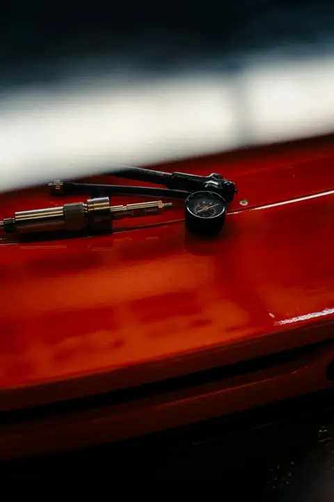

Winter Car Kit UK: Gifts for Safer Winter Driving
Ad: As an Amazon Associate I earn from qualifying purchases. Links on this page are affiliate links, so I may earn a commission if you buy, at no extra cost to you. More info.
Practical gifts for new drivers, long commuters and anyone who has been stuck on a frosty morning. A good winter car kit is a gift that shows you care.
1. AA winter car kit (AA5281)
A ready-made winter kit from a trusted UK motoring brand covers the basics in one box. Ideal for new drivers or a parent who worries about them.
View on Amazon UK2. 27000mAh jump starter with air compressor
A portable jump starter means no waiting for a breakdown truck on a cold morning, and this one also pumps tyres. A great gift for anyone with an older car.
View on Amazon UK3. De-icer and ice scraper bundle
A de-icer and scraper set is a must for frosty UK mornings. Cheap, practical and a perfect top-up gift.
View on Amazon UK
Lifestyle photo (not the product): Unsplash
4. AstroAI 12V digital tyre inflator
A 12V tyre inflator plugs into the car and makes checking pressures easy. Great for drivers who never quite get round to the petrol station air machine.
View on Amazon UK5. Autoglym Fast Glass
Clear glass matters when the sun is low and the screen is grubby. A small but genuinely useful gift for any driver.
View on Amazon UKLifestyle photo (not the product): Pexels
6. Gaiatop rechargeable hand warmers
Rechargeable hand warmers are handy while waiting for the windscreen to defrost. A cosy extra for commuters.
View on Amazon UK7. Mini rechargeable keychain torches (2 pack)
A torch on the keyring is ideal for finding the tyre valve or keys in the dark. A small gift every driver will use.
View on Amazon UK
Lifestyle photo (not the product): Pexels
8. Retractable fast car charger
A fast charger keeps phones topped up for maps and emergencies. Useful in any winter car kit.
View on Amazon UK